Welcome to TzSafe
TzSafe offers a user-friendly platform for creating and managing multisig wallets. We prioritize the privacy of our users by not storing any of their private data. Information such as Tezos address aliases and regularly used wallets are exclusively stored locally in the user's browser.
Please note that the BETA version does not include the implementation of TZIP-026, which pertains to Proof of Event: Message Signing as an alternative for Account Abstracted Wallets. This TZIP is still on draft. Thus, it has not been integrated into the current version.
Before proceeding with any action, please ensure you use the correct URL:
- The Mainnet can be found at the URL: https://tzsafe.marigold.dev/. We will provide biweekly updates on this platform regarding Marigold announcements.
- The Ghostnet can be accessed at the URL: https://ghostnet.tzsafe.marigold.dev. We will periodically update and release new changes on this platform without further announcement.
Our platform currently supports both desktop and mobile devices for seamless accessibility.
.png)
Access the Mainnet on a mobile device
.png)
Access the Mainnet on a desktop
Create new wallets
The first time we go to the website, we shall see two options in the center, New Wallet and Import Wallet, as the figure shows.
.png)
Notice that upon logging into TzSafe on new devices, users will find that their TzSafe wallets do not automatically load. To access their wallets on the new device, users must load them manually through the import function. Please see here for importing our wallets.
Let’s click New Wallet to create our first blankly new multisig wallet! Before we start the creation process, it’s required to log in to our Tezos account. The purpose of login is to make Tezos operations, such as contract origination, transaction, etc. In this case, we arergoing to originate a TzSafe contract later.
.png)
Now, we follow the step on UI to finish the remaining process of creation. First, name our wallet. The name is only stored in our browser locally. Therefore, no one will know what name we use for our wallet.
.png)
Then, click Continue to proceed to the second step. The name can be changed on the Address book page later. Next, we will need to finish the setting as the figure shows.
.png)
By default, TzSafe will put our Tezos account as an owner in Owner Address. We can add more owners here. It’s strongly recommended that add more owners. Please be extra careful here. If we aren’t one of the owners, we will lose control of the newly created wallet forever.
The Owner Name is optional. We may or may not fill it in but filling it is recommended that will help us easily identify Tezos account. If we don’t fill it, TzSafe will present in Tezos address.
Threshold depends on the use case. In the above figure, the threshold is selected as 2/3, indicating we are going to create a 2-of-3 TzSafe wallet. To be more specific, to successfully proceed any transaction on the wallet, we need at least two approvals from of its owners.
Proposal duration is the lifetime of the proposal. A proposal can be approved by its owners only during its proposal duration. In the case of proposal exceeding its duration, any owner of the wallet can resolve it immediately but will not be executed. Then it will just be archived and put on the history page.
Notice that before we proceed the next step, please make sure that we are one of the owners. The rest of the settings could be adjusted later by issuing proposals on the setting page.
Finally, click Continue and wait for the wallet creation. It will need to a few minutes for confirmation.
.png)
If a wallet has been created successfully, we will see as follow:
Currently, the creation fee, which is a one-time fee, is around 1.62 XTZ, depending on the number of owners.
.png)
Import wallets
We can go to Import wallet to import any existing TzSafe wallet. TzSafe allows us to manage multiple wallets. The currently used wallets can be selected in the menu, as shown by the following figure.
.png)
Notice that, even though we are not the owner of a wallet, we can still import it. Not being an owner just means we can’t make or sign proposals for the wallet.
The very first step of importing an existing wallet is to fill in its wallet address, and its alias if that's needed. The name can be modified in the Address book later.
.png)
Click Continue to go next, it’ll take a few seconds to load the setting of the wallet. Then, we can preview the settings. We can also give an alias to owner addresses in this step.
.png)
Finally, save the wallet, and then it should be shown on the sidebar.
.png)
Fund wallet
After creating our TzSafe wallet, we may be eager to transfer our assets into it to bring it to life. The Fund wallet feature provides us with a simple and convenient way to use our logined Tezos account for funding the wallet.
To fund our TzSafe wallet, we can follow these steps:
- Click on
Fund Walletto access the funding page. - Enter the desired amount of XTZ or add FA1.2 and FA2 tokens by selecting
Add Token. - Once the amount or tokens have been specified, click on
Fundto initiate the transfer to our TzSafe wallet.
.png)
We should see the newly updated balance in XTZ of the wallet on the sidebar.
.png)
For FA1.2 or FA2 tokens, when initiating new proposals, we will have visibility of them, giving us the ability to include them in the proposal.
.png)
Notice that if there are multiple imported wallets, we will need to double-check which wallet we’re currently funding. Once we transfer out the XTZ, it will never come back.
Create Proposals
The big difference from the Tezos account, or so-called single-signature account, is that
- The process of creating a proposal is mandatory for every transaction made from the TzSafe wallet.
- batch transactions are allowed in TzSafe wallet.
TzSafe supports the following types of transaction at the moment, with more to be added in the near future.
Notice that creating a proposal without any transaction is forbidden.
Supported Transaction
XTZ Transfer
This transaction allows us to transfer XTZ to the target account, including all tz accounts and KT accounts, which have a %defaut entrypoint with unit type.
First, click New Proposal on the sidebar. Then, click Transfer. Filling in the amount and the target address on UI. Before submitting, please double-check the address and transfer amount. Finally, click Submit to create our new proposal.
.png)
Note that TzSafe doesn’t validate transferring amount is equal to or greater than the balance while the proposal is being created. The validation only happens when the proposal is executed. In other words, it's possible to fund an insufficient wallet before the proposal is executed.
FA1.2 Approve
TzSafe provides support for approvals of FA1.2 tokens, allowing users to authorize the spending of tokens.
To create a new proposal, navigate to the sidebar and click on New Proposal. From there, select the option for FA1.2 Approve. To grant approval, fill in the desired token and amount and the spender's address. Once the information is filled out, click the `Submit` button to complete the approval proposal.
.png)
FA1.2 Transfer
TzSafe also offers the capability to perform transfers for FA1.2 tokens. To create a new proposal, simply access the sidebar and click on New Proposal. Then, select the FA1.2 Transfer option from the available choices. Select the desired token, specify the amount, and provide the transfer-to address. Finally, click Submit to click a proposal.
.png)
FA2 Transfer
TzSafe also provides support for transferring FA2 tokens. Currently, it allows for the transfer of multiple tokens within a single transaction, but with the restriction that all tokens must belong to the same FA2 contract. In cases where the FA2 tokens are spread across different contracts, it becomes necessary to create separate transactions for each contract involved.
To create a new proposal, navigate to the sidebar and click on New Proposal. From there, select the option for FA2 Transfer. Choose an FA2 token and specify the desired amount and the recipient's address. When adding a second token, please note that it must belong to the same FA2 contract as the first token. Finally, click the Submit button to create your new proposal.
.png)
Contract Execution
Contract execution allows us to create a proposal to execute arbitrary Tezos contracts. Besides FA2 Transfer, we can also use Contract Execution to perform a transfer.
Taking an FA2 contract as an example, click New Proposal on the sidebar and select Contract Execution. Next, fill in a target address and the amount sent to the address. In this case, we fill FA2 address, KT1Gh6T9CjpxEV6WxCzgExhrATEYtcLN5Fdp, and amount 0.
.png)
After click Continue, TzSafe will check if the contract of the given address exists. If so, we can see the contract parameters rendered on the page, as the following shows.
.png)
To transfer FA2 tokens, we select the entrypoint transfer and click Add item to fill in the details. Finally, click the Submit button to create a new proposal. As the same as the transaction of transferring XTZ, an insufficient amount can be funded after proposal creation is done.
Batch
Sometimes we want to perform several transactions at the same time. In TzSafe, we can achieve it by using batch. A batch of transactions is atomic, which means any one of the transactions in one batch fails, all transactions fail.
This is useful when we want to exchange assets with others. For example, if we want to buy the NFT of Alice in 5XTZ, we will make two transactions as a batch. First, transfer 5XTZ to Alics. Second, call Alice’s contract to transfer NFT. We may want to have a third transaction to ensure NFT is in your name. Therefore, we can safely make a swap.
The following is the figure showing a batch. Users can click any type of transaction to add it and click Submit all transactions at once. It is important to note that the indexes indicate the order in which the transactions will be executed.
.png)
Sign, Reject and Resolve Proposals
After proposals have been created, their state will represent it on the proposals page sorting by creating time, as the figure shows. Users can click them to see more details.
.png)
We can also interact with the proposals by signing, rejecting, or resolving them based on the conditions of the proposals.
- Signing proposals means owners give their approvals
- Rejecting proposals means owners disagree with the proposals.
- Resolving proposals means owners can
- execute and archive the proposals if acquiring sufficient approvals.
- archive the proposals if the proposals exceed their duration
- archive the proposals if the proposals are rejected by most of the owners so they can’t pass the threshold to execute.
It’s possible to sign (or reject) and resolve at the same time If some conditions are satisfied. After proposals are resolved successfully, they will be archived and presented on the history page. Notice that only the owners of the wallet are permitted to interact with it.
The following is using a 2-of-2 TzSafe wallet as an example.
Case: Sign and Resolve Proposal 1
For the whole new proposal, we shall see two buttons for rejecting and signing as above picture. When clicking either button, we shall see a pop-up window for confirming the action as below figure. Clicking Confirm will process the sign action in this case.
.png)
The stats of the proposal will change to Waiting for signers, which means it is pending another owner’s action.
.png)
Once the proposal accumulates sufficient approvals, we may see a resolve button there. By clicking it, the window will pop up and ask for confirmation.
.png)
We can double-check the proposal and then click Confirm. The proposal should be resolved, executed, and archived on the history page.
.png)
Case: Sign and Resolve Proposal 2
The below figure is another example, if looking at the details of proposal 2, another approval is already there. In this case, we can try to sign and resolve the proposal at the same time. First, we click Sign.
.png)
We should see the trying to resolve option represented on the popped-up windows. We select “yes” and click Confirm to resolve the proposal.
.png)
Case: Fail to Resolve Proposal
Sometimes, proposals may be not successfully resolved. For example, the following proposal proposes to transfer an amount that is more than the wallet has. Therefore, if we are trying to resolve the proposal, which can’t be actually resolved, the failed message will be present after clicking Confirm.
.png)
.png)
The error will show as above. We can see more detail there. In this case, the error results from insufficient balance. Either owner can fund more money into the wallet, or reject the proposal.
Case: Resolve Expired Proposal
If none of the owners resolve proposals within the proposal duration, the state of the proposals will become expired. Any owners can click resolved to archive the proposals.
.png)
Setting
The settings are divided into two categories.
Changes require proposing a proposal
The change involves contracts, so we will need to create a proposal and go through gathering approvals and rejects process to alter, such as threshold, owners, and proposal duration. The created proposals will present on the proposals page.
We can add owners by clicking Add Owner ; and remove by Remove. When adding new owners, we can also provide aliases. We can also like to modify the Threshold as well as the Proposal duration. Finally, we have the option to delegate our wallet by adding a baker in Delegate wallet.
After we are satisfied with the changes, please double-check all the settings, especially check if we just unexpectedly remove ourselves from owners. Finally, click Save and then all changes will be in the newly created proposal.
.png)
Change Without proposal
Currently, there is only one change that needs no proposal. That is to remove an imported wallet from the sidebar. The data of the imported wallet is only stored locally. Thus, it’s merely deleting data from our local. The wallet will still remain on-chain.
If we don’t want the wallet present on the sidebar anymore, click the Deleting wallet button in the top right corner of the setting page. After clicking, we will see the button showing deleting. Please wait for a few seconds to fully delete the wallet. If we accidentally delete the wallet, don’t worry. We can import it back by Import wallet.
.png)
Understand Entrypoint
TzSafe, a multisig wallet, is created using a smart contract. The TzSafe application, TzSafe UI, offers a user-friendly interface for interacting with wallets. If users wish to develop their own smart contract to interact with TzSafe, understanding the entrypoints of the wallets is crucial. This section will introduce the entrypoints of TzSafe in different versions. We'll use Better-Call Dev as an example to demonstrate.
To determine the version of TzSafes:
- Within the TzSafe application, you can find the version information as follows:
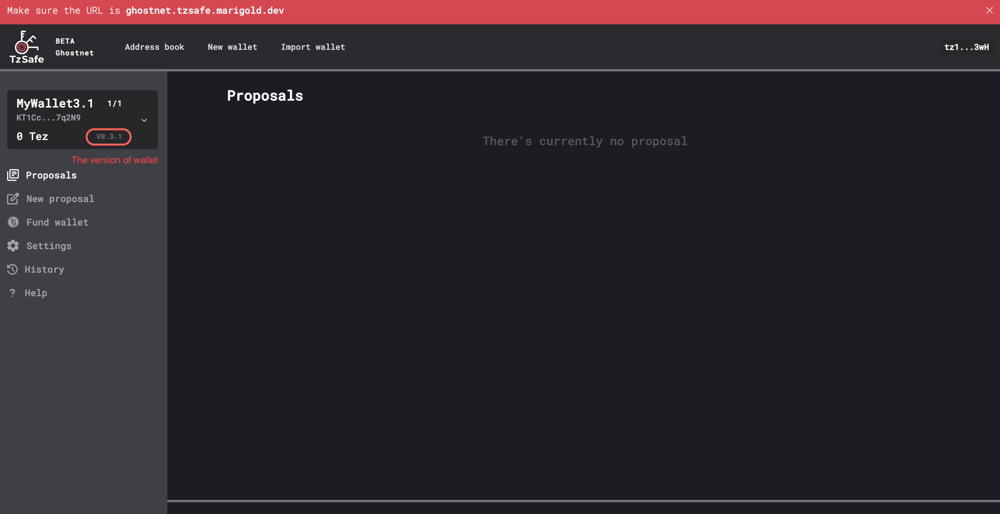
Version ≥0.3.x
- In version 0.3.3, parameter of entrypoints are self-explanatory, and the proof has been temporarily removed for redesign
- Beginning with version 0.3.2, wallets now support two new types of proposals:
add_or_update_metadataandremove_metadata. Please note that this support is available only in the contract, not in the TzSafe UI. - Beginning with version 0.3.1, wallets will free up storage space upon the resolution of proposals, leading to savings on storage fees for subsequent proposal creations. Please be aware of security issue: the newly added entrypoint for updating metadata does not check ownership, which means that anyone can modify the wallet's metadata.
- Beginning with version 0.3.0, wallets can generate proof.
Version 0.3.3
Beginning with this version, entrypoint parameters are self-explanatory, enabling users to easily interact wth Better-Call Dev.
Once creating the proposal, users can find the proposal ID in an emitted event with the tag %create_proposal. This ID can be used for signing and resolving the proposal. Upon resolution, the proposal is removed from the contract storage. Users can retrieve the full history from the emitted event with the tag %archive_proposal, and the event's content is in bytes. Here is the type for unpacking it.
Version 0.3.2
To align with TZIP-27, TzSafe team offers several proposed models for integration. For more detailed information, please refer to this link. We have chosen to implement the "PoE as an executed action" model, and we will maintain the usage of the term "actions" as a way to distinguish them from Tezos' standard transactions.
💡 Transactions approved through the owners' consensus are referred to as "actions" to differentiate the term from Tezos' standard transactions.
Regarding the interface adaptation, it may seem complex and daunting for users when dealing with the entrypoints and parameters required for signing and resolving proposals. On the contrary, the process is straightforward. Users do not need to calculate signatures or hash data themselves. From proposal creation to resolution, all that's needed is a blocker explorer to check the results of the operations.
Create a Proposal
The create_proposal entrypoint is employed to generate proposals, taking a list of proposal contents as its parameter.
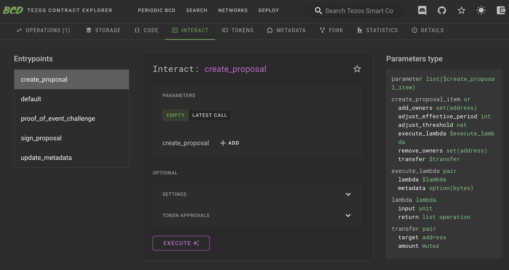
By clicking +ADD, we can select the kind of proposal to create.
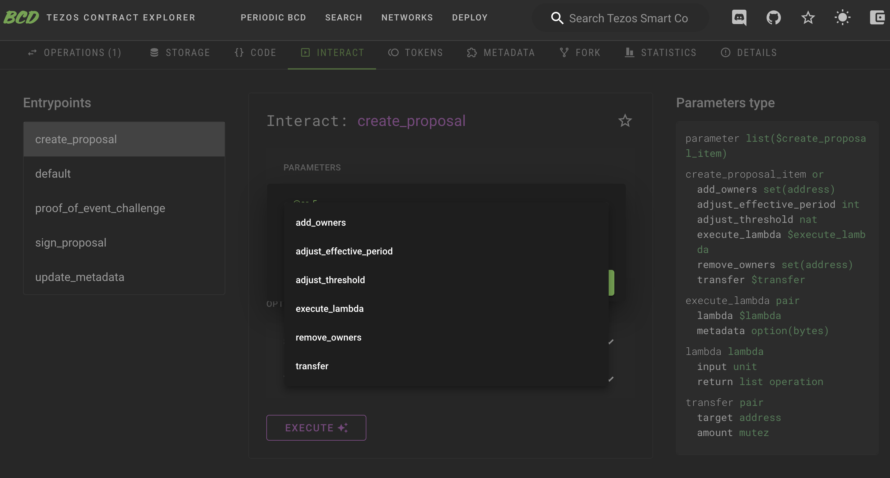
When designing the TzSafe contract, appropriate annotations are assigned to each variable within the parameters. Consequently, when inspecting the TzSafe contract on Better-Call Dev, interaction is straightforward, as each field is largely self-explanatory.
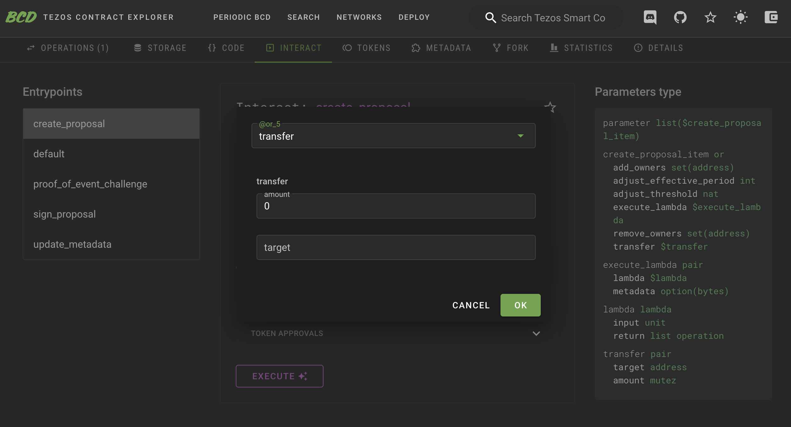
Upon the successful creation of a proposal by an owner, an event tagged %create_proposal is emitted.
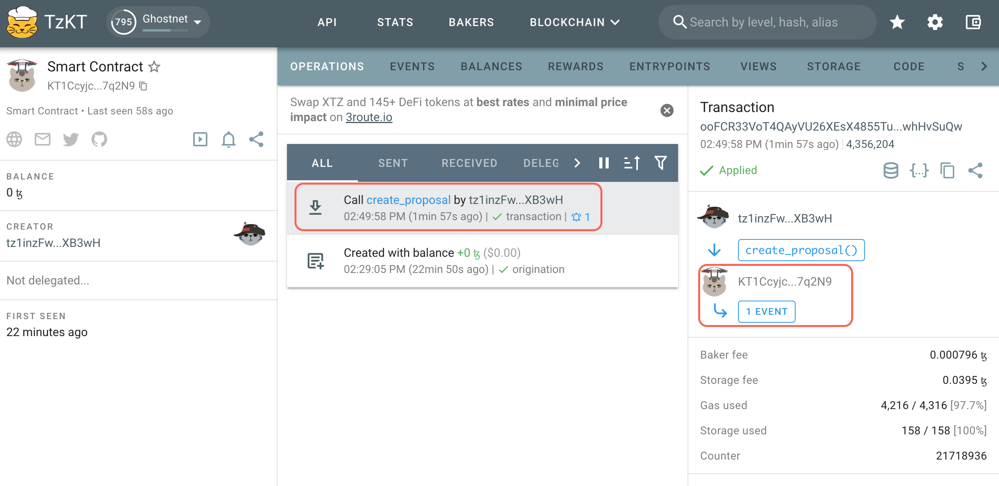
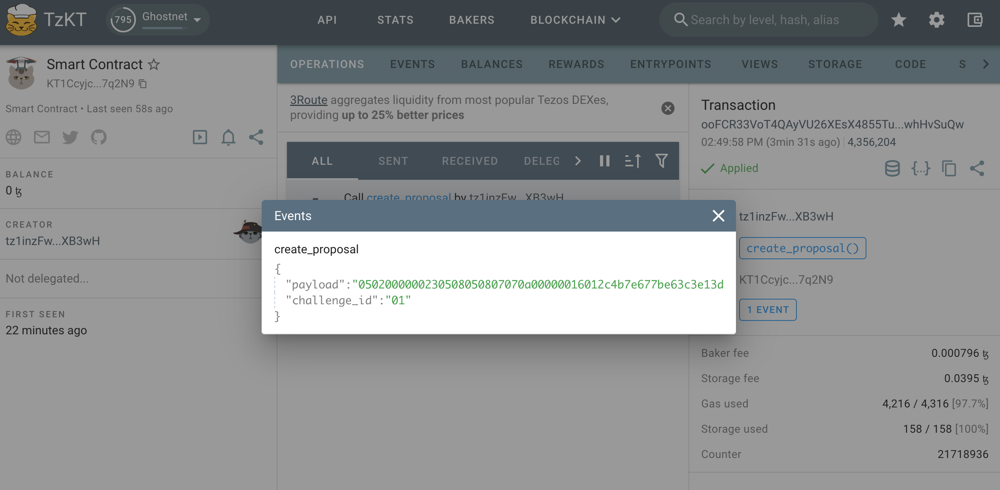
This event includes two pieces of information that we'll need them to sign and resolve the proposal:
challenge_id: This represents a unique ID for each proposal, presented in bytes. With each new proposal, the ID increases by one.payload: This contains the proposal's content but is encoded in Michelson'spack. If weunpackthe payload, it should match the input parameter. However, typically, there's no need tounpack. If the need does arise, we must specify the type, which can be found either:
Here's an example of using unpack in the camligo:
> git clone git@github.com:marigold-dev/tzsafe.git
> cd tzsafe
> cat unpack_proposal_contents.mligo
#import "./tzsafe/src/internal/proposal_content.mligo" "Proposal_content"
type proposal_content = Proposal_content.Types.t
type proposal_contents = proposal_content list
> cat unpack_proposal_contents.mligo
let test_unpack_proposal_contents =
// remember to add prefix "0x" to the bytes receiving from the event with tag `%create_proposal`
let bytes = 0x0502000000250508050807070a0000001601361c589d324f1575cccb0adcb58664174c74ee7c000080897a in
// print unpack result
Test.log (Bytes.unpack bytes : proposal_contents option)
> ligo run test unpack_proposal_contents.mligo
Some ([Transfer ({amount = 1000000mutez ; target = KT1DWt1ec76EPrvavMS4Rz95hkYGJFLP3iTp})])
Everything at the top-level was executed.
- test_unpack_proposal_content exited with value ().
Sign a Proposal
The sign_proposal entrypoint is used to sign a proposal. To sign a proposal, it must first be created. Therefore, we can only provide the challenge_id and payload obtained during the proposal creation. If we agree to execute the proposal, the agreement field should be set to true (check the checkbox); otherwise, it should be set to false(uncheck the checkbox).
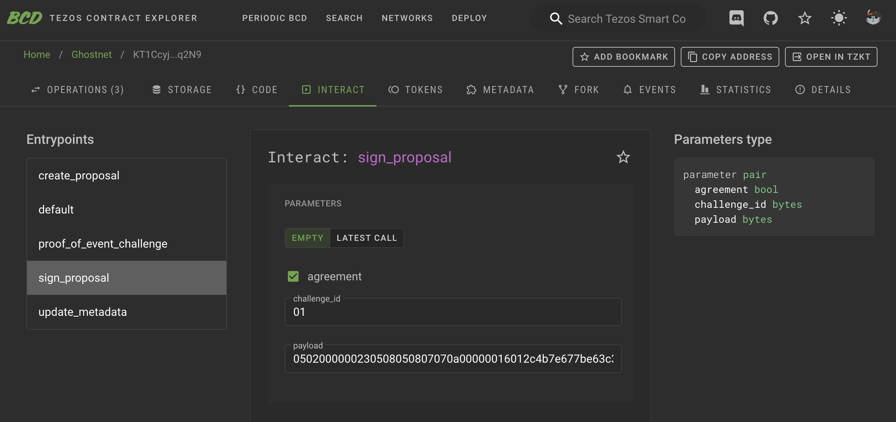
TzSafe requires payload to be provided again in sign_proposal to prevent reorgs. By verifying both the challenge_id and payload, TzSafe ensures that we are executing the intended content.
Once the signing is completed, an event is emitted with the tag %sign_proposal. This event is simply for displaying the signing result.
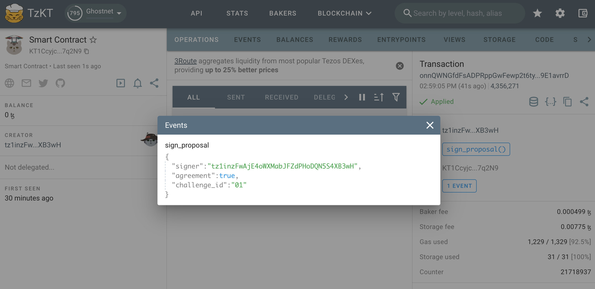
Resolve a Proposal and Generate the Proof
The entrypoint for resolving is named challenge_proof_of_event in accordance with TZIP-27. However, it can only be successfully performed when certain conditions are met. Please see here for more details.
Similar to signing a proposal, we need to provide the challenge_id and payload obtained during proposal creation to ensure that reorgs have occurred.
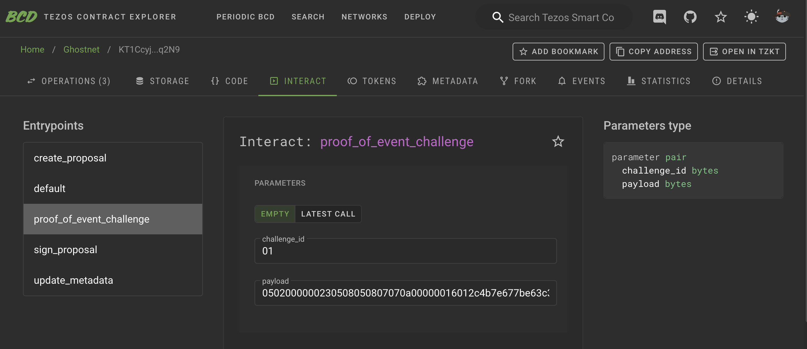
When this entrypoint is successfully executed, two events are emitted:
- An event with the tag
%resolve_proposalshows the simple result of the proposal, including whether it wasexecuted,rejected, orexpired. In most cases, this information is sufficient. - The other event, tagged as
%proof_of_event, serves as the proof of event for TZIP-27. This proof contains a pair ofchallenge_idandpayload. The payload is encoded in Michelson'spack. If we performunpack, we can access the details of the proposal, including signers, resolvers, contents, and more. The type forunpackcan be found:
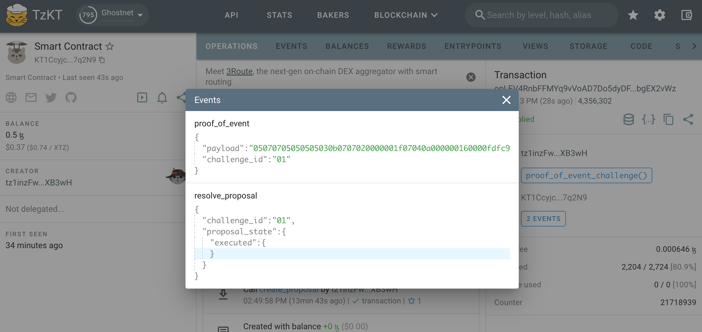
Here is an example of using unpack in the camligo:
> git clone git@github.com:marigold-dev/tzsafe.git
> cd tzsafe
> cat unpack_proposal.mligo
#import "./tzsafe/src/internal/storage.mligo" "Storage"
type proposal = Storage.Types.proposal
let test_unpack_proposal =
// remember to add prefix "0x" to the bytes receiving from the proof
let bytes = 0x05070705050505030b0707020000001f07040a00000016000101e9a6d43af927384fcd1068ffc12e461e219f20030a070707070a00000016000101e9a6d43af927384fcd1068ffc12e461e219f2000bfe9bbd30c0707050907070a00000016000101e9a6d43af927384fcd1068ffc12e461e219f2000a7edbbd30c02000000230508050807070a000000160142d3fb211660bcec97e8117919c549337a2cb425000001 in
// print unpack result
Test.log (Bytes.unpack bytes : proposal option)
> ligo run test unpack_proposal.mligo
Some ({contents = [Transfer ({amount = 1mutez ; target = KT1Eg8784FTRicrRW9nt13fvRh1hYKWwFF9X})] ; proposer = {actor = tz28VMEvxy1pwb7prrvGwLw4bQf2eCMn6P1c ; timestamp = timestamp(2023-10-24T08:04:15Z)} ; resolver = Some ({actor = tz28VMEvxy1pwb7prrvGwLw4bQf2eCMn6P1c ; timestamp = timestamp(2023-10-24T08:08:07Z)}) ; signatures = [tz28VMEvxy1pwb7prrvGwLw4bQf2eCMn6P1c -> true] ; state = Executed (())})
Everything at the top-level was executed.
- test_unpack exited with value ().
Both users and DApps can track the new actions of TzSafe without being inconvenienced by internal TzSafe operations by monitoring the events %proof_of_event or %resolve_proposal tags. We can utilize APIs provided by TZKT or Taquito to assist us in this regard. Please note that if the proof is intended for any purpose, it is crucial to verify the proof as the initial step. In the TzSafe design, each operation containing the proposal resolution will also have only one associated proof.
Version 0.3.1
Please pay attention to a security concern: the newly introduced entrypoint for updating metadata in the contract storage, following TZIP-16, does not verify ownership, enabling anyone to modify the wallet's metadata. It's important to note that this issue does not affect the other TzSafe functions, nor the TzSafe UI. Individuals concerned about this issue should consider migrating to at least version 0.3.2.
The following are the types needed if one wants to access the details of the bytes produced by the wallet.
-
the type of proposals:
-
the type of proof:
Version 0.3.0
Version 0.3.0 supports generating proof but does not support saving storage fees. This version is exclusively available on the ghostnet.
Version ≤ 0.1
In contrast to version ≥ 0.3.1, the entrypoints and their parameters are self-explanatory and presented in readable types, ensuring a user-friendly interaction with them on Better-Call Dev for developing.
Events are still emitted when proposals are created, signed, and resolved. It's important to note that there is no proof emitted to conform to the TZIP-27 standard.
Please note that there is a legacy proposal content, execute of create_proposal, in the contract. The legacy proposal content functions the same as transfer. The execute was designed to be able to customizabled the type when users generate contracts, allowing the wallet to call other specific contracts. In some cases, if the wallet consistently interacts with a specific contract, this can save on storage and gas fees. Now, we are inclined to use execute_lambda to replace execute, so the execute version has been removed in version ≥ 0.3.1.
Logging in Using TzSafe App
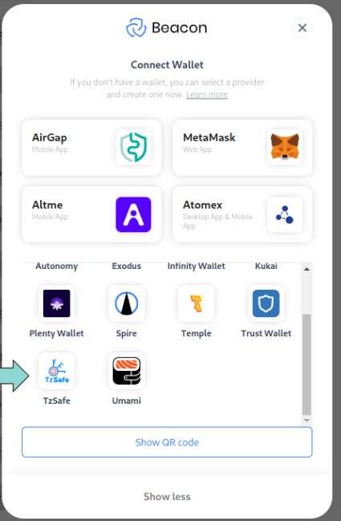
As of now, the configuration for the TzSafe app hasn't been committed to the beacon-sdk repository. For those who want to quickly try interacting with the TzSafe app through a dApp, please follow these steps:
> git clone git@github.com:marigold-dev/beacon-sdk.git
> npm i
> python -m http.server --directory ./examples
- Open your browser.
- Go to the Example Dapp: http://localhost:8000/dapp.html.
- Click on "Request Permission."
- Select "TzSafe" and enjoy!